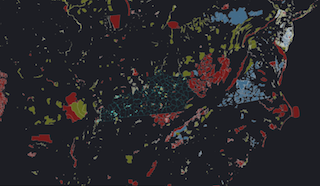

Maria Renee Horn
Web Cartography at the University of Kentucky

This map shows Hydro, Petroleum and Solar electric power generation across the United States.
Upon clicking on the map, you will see all the electric power plants within 500 km and the area will be highlighted. Information regarding individual plants like its name, capacity in Megawatts and its distance from the plant to the click point will be also available.
It was built using custom JavasCript code drawing upon the Leaflet JavaScript Library.

This Map shows bird observations of Kentucky Imperiled/Vulnerable species from 2014 eBird observation records. Kentucky and Global ranking statuses were obtained from the Kentucky State Nature Preserve Commission's published county records (http://naturepreserves.ky.gov/pubs/Pages/cntyreport.aspx).
The eBird observation records were obtained in May 2015 from Cornell's eBird website. Species without special State or Global ranking status were excluded from the analysis.
This map was generated in QGIS using CartoDB CSS styles.

Emissions of Carbon Dioxide by State and Industry
This data set does not reflect total U.S. GHG emissions. Data report to EPA as of 08/16/2015.
It was created in QGIS using CartoDB CSS styles.

This map shows the average incidence rate per 100,000 people, average from 2008 - 2012.
Data were downloaded from the
National Cancer Institute on 11/13/12015. The data describe cancer rates for all cancer sites by mortality, for all races, sexes, and ages, averaged over the years of 2008 - 2012.
This map was generated in QGIS using CartoDB CSS styles.

This map shows the bus stops in San Francisco, California with a half-mile buffer distance.
It was created with QuickOSM plugin using data from OpenStreetMap and SF OpenData, both QGIS projects.